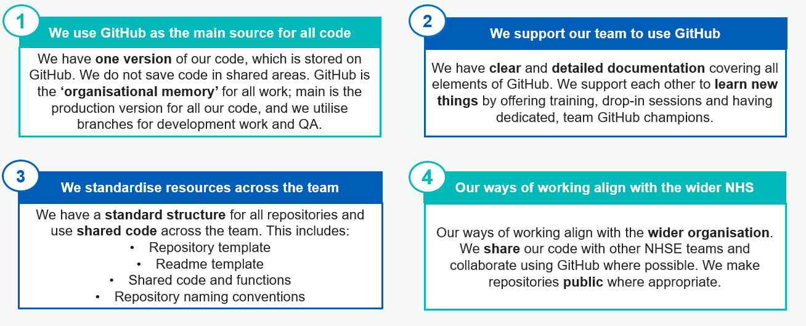

Team Principles
Why Principles are Useful
Following these principles will enable better ways of working. It will be easier to find code you’re looking for, ensure you’re always using the latest version, make it easier to understand somebody else’s code, and more.
4 Team Principles for using GitHub
Summary

1. We use GitHub as the main source for all code
GitHub by default
- We have one version of our code which is stored on GitHub. We do not save code in shared areas (e.g. SharePoint).
- We create one repository per project.
- The main branch on GitHub is the production version of our code (QA’d and ready to use).
- We clone the GitHub repository to our personal areas rather than a shared area.
- All code is available on GitHub; data, file paths, lakemart paths and outputs are hidden.
Making changes
- GitHub is the ‘organisational memory’ for all work.
- We use branches for development work and create a new branch for each significant update.
- We commit regularly and focus on committing small changes rather than large updates.
QA & code reviews
- All work completed on a branch is QA’d before merging into main.
- We do regular code reviews to support team development.
- We use ‘Issues’ to aid QA and to log ideas for future iterations.
2. We support our team to use GitHub
Learning & development
- We support each other to learn new things.
- We ensure everyone can start using GitHub, with training that starts from the basics of using GitHub.
- We offer training in small, logical steps towards an end goal.
- We offer regular drop-ins and have dedicated GitHub Champions that can be approached for extra support.
Team documentation
- We have clear and detailed guidance and documentation covering all elements of using GitHub.
- Our training resources are thorough and assume no prior knowledge of GitHub.
- We have easy to understand guides for non-coding members.
3. We standardise resources across the team
Standardised repositories
- We have a standard SE repository template used for all repositories, which includes and ReadMe template, a standard .gitignore and licenses.
- We follow standardised naming conventions for all repositories.
Process standardisation
- We have shared functions that are used across the team.
- We have standardised processes, including commenting and QA’ing.
- We have a standardised process for moving a repository from private to public.
4. Our ways of working align with the wider NHS
- We follow best practice to ensure other NHSE teams understand our processes.
- We share our code with other NHSE teams and collaborate using GitHub where possible.
- We make repositories public where appropriate. *